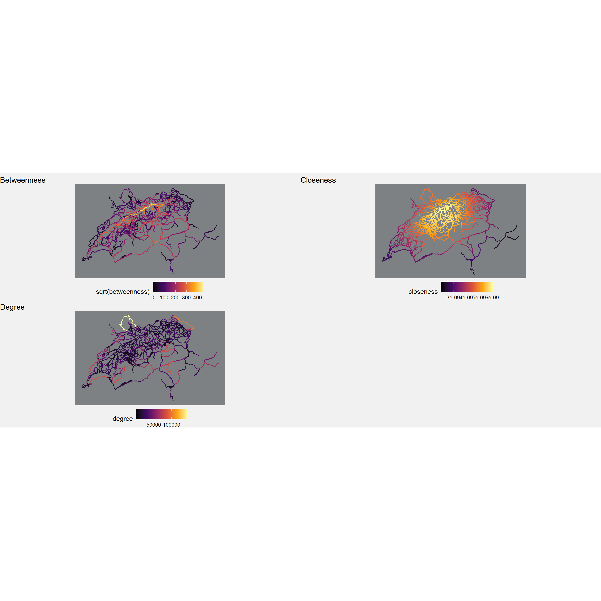

Reading layer `veloland' from data source
`A:\STUDIUM\06_Fruelingssemester26\STDS\Week_8\data\veloland.gpkg'
using driver `GPKG'
Simple feature collection with 2066 features and 1 field
Geometry type: LINESTRING
Dimension: XY
Bounding box: xmin: 2485756 ymin: 1076723 xmax: 2837853 ymax: 1297683
Projected CRS: CH1903+ / LV95
# Build an undirected network objectvelo_network_sfnet <-as_sfnetwork(velo_network, directed =FALSE)# Compute node-level centrality measuresvelo_network_sfnet <- velo_network_sfnet %>% tidygraph::activate(nodes) %>%mutate(betweenness =centrality_betweenness(weights = length),closeness =centrality_closeness(weights = length),degree =centrality_degree(weights = length) )# Convert the network back to sf edges and nodesvelo_network_edges <- velo_network_sfnet %>% tidygraph::activate(edges) %>%st_as_sf()velo_network_nodes <- velo_network_sfnet %>% tidygraph::activate(nodes) %>%st_as_sf()# Attach node centrality to edges by averaging both end nodesvelo_network_edges_cent <-aggregate(velo_network_nodes, velo_network_edges, FUN ="mean")dark_map_theme <-theme_void() +theme(plot.background =element_rect(fill ="#f1f1f1", color =NA),panel.background =element_rect(fill ="#7e8183", color =NA), )p_betweenness <-ggplot(velo_network_edges_cent) +geom_sf(aes(color =sqrt(betweenness)), size =0.7) +scale_color_viridis_c(option ="inferno") +labs(title ="Betweenness")p_closeness <-ggplot(velo_network_edges_cent) +geom_sf(aes(color = closeness), size =0.7) +scale_color_viridis_c(option ="inferno") +labs(title ="Closeness")p_degree <-ggplot(velo_network_edges_cent) +geom_sf(aes(color = degree), size =0.7) +scale_color_viridis_c(option ="inferno") +labs(title ="Degree")plot_design <-"AABBCC##"whole_plot <- ( p_betweenness + p_closeness + p_degree + patchwork::plot_spacer()) + patchwork::plot_layout(design = plot_design) & dark_map_theme &theme(legend.position ="bottom")whole_plot

The three centrality measures each capture a different aspect of the network, and therefore each of them is meaningful in its own way. At the same time, each measure also has its limitations, so no single centrality gives a complete picture on its own. The values of closeness and degree are shown on their original scale, where the exact numeric values are less important and the plot should be read more as a high-low comparison. For betweenness, it is more useful to apply a square root transformation, because otherwise the largest values would dominate the scale.
One possible limitation is the use of length as a weight. While this is reasonable for shortest path calculations, it is less intuitive for degree centrality, because degree mainly describes connectivity rather than physical distance. In this network, routes outside the dense center may therefore appear more central, since the central area is already highly connected and consists of many shorter segments. This does not necessarily make the result wrong, but it should be seen as a methodological choice that influences the interpretation.
A combined index is created where the values first have to be rescaled to a common range, for example by using min-max normalization. This makes it possible to combine the different centrality measures into a single score and results in a more balanced plot that is easier to interpret. In this sense, the combined index should be understood as an exploratory summary rather than a theoretically fixed centrality measure.
locations <-st_read("../data/locations.gpkg")
Reading layer `locations' from data source
`A:\STUDIUM\06_Fruelingssemester26\STDS\Week_8\data\locations.gpkg'
using driver `GPKG'
Simple feature collection with 8 features and 1 field
Geometry type: POINT
Dimension: XY
Bounding box: xmin: 2499995 ymin: 1076852 xmax: 2837794 ymax: 1267861
Projected CRS: CH1903+ / LV95
# Define Bern as originorigin <-st_geometry(filter(locations, Ortschaft =="Bern"))# Use all remaining locations as destinationsdestinations <-st_geometry(filter(locations, Ortschaft !="Bern"))# Compute shortest paths from Bern using edge length as weightshortest_paths <-st_network_paths(velo_network_sfnet, from = origin, to = destinations, weights = velo_network_sfnet$length)# edge_paths stores edge indices; merge indexed segments into one geometry per routeshortest_paths_st <- shortest_paths %>%rowwise() %>%mutate(geometry =st_union(st_geometry(velo_network_edges)[edge_paths]) ) %>%ungroup() %>%st_as_sf()show(shortest_paths_st)